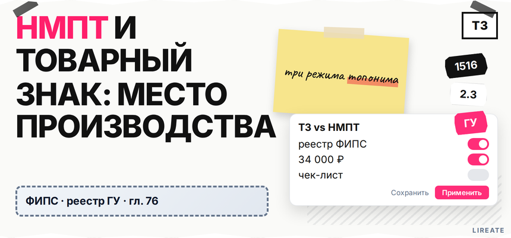
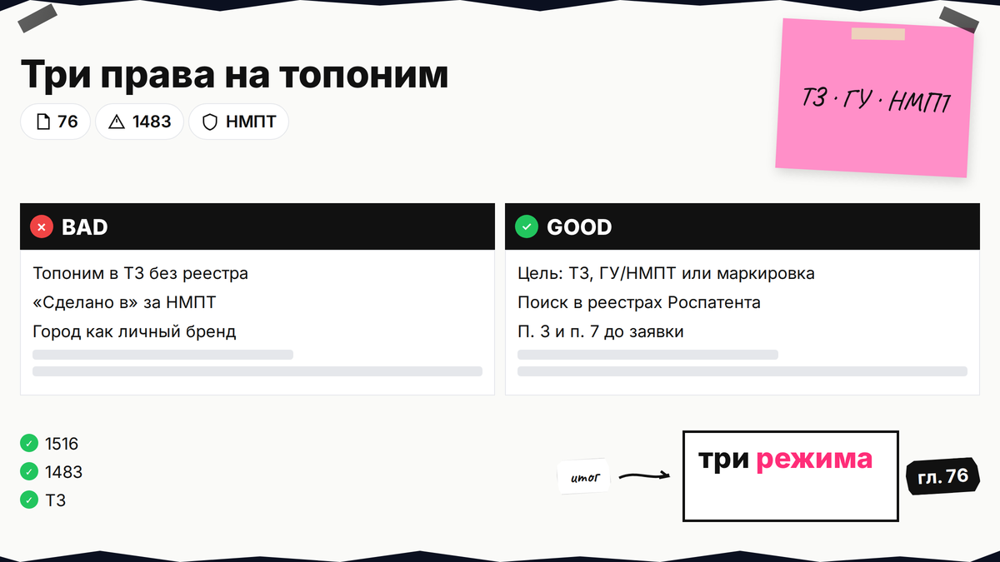
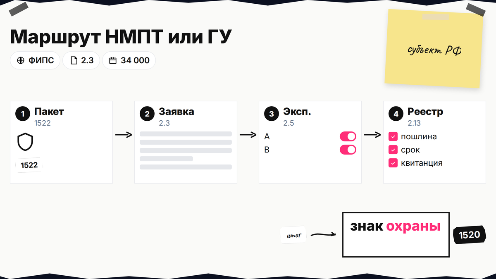
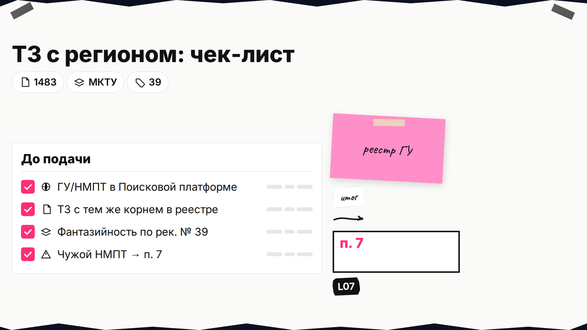

Вы придумали бренд со словом региона или хотите крупно писать "сделано в…" на упаковке, а юрист предупреждает про конфликт товарного знака с НМПТ и п. 7 ст. 1483. Пока не ясно, нужен ли вам товарный знак, географическое указание (ГУ) или наименование места происхождения (НМПТ), легко получить отказ или нарушить чужое право из реестра. Ниже вы сравните три режима по гл. 76 ГК РФ, проверите реестры Роспатента и пройдёте чек-лист до подачи заявки на ТЗ.

TL;DR / Быстрый инсайт: Товарный знак защищает ваш бренд в выбранных классах МКТУ. ГУ и НМПТ по ст. 1516 закрепляют связь товара с территорией и особыми свойствами; право на ГУ используют по данным Государственного реестра, отчуждение ГУ запрещено (ст. 1519). Чужой охраняемый НМПТ/ГУ на однородные товары бьёт по п. 7 ст. 1483; ложное место производства - по п. 3. Пошлины ГУ/НМПТ: 3 000 + 13 000 + 18 000 ₽ (пп. 2.3, 2.5, 2.13 по таблице Роспатента), итого 34 000 ₽; скидка за электронную подачу отменена с 05.10.2024 (ПП РФ № 1278).
Нормы на 12.11.2026; не юридическая консультация. Базовый поиск ТЗ - чек-лист Lireate.

Товарный знак отличает ваш товар на рынке. ГУ фиксирует связь товара с территорией при хотя бы одной существенной стадии на месте (ст. 1516). НМПТ - известное географическое имя и все существенные стадии на территории объекта.
| Инструмент | Кто "владеет" смыслом | Можно продать как бренд? | Типовая цель |
|---|---|---|---|
| Товарный знак | Заявитель / правообладатель | Да, отчуждение по сделке | Узнаваемый бренд, монополия на обозначение |
| ГУ | Коллективно; право по реестру | Нет отчуждения ГУ (ст. 1519) | Защитить репутацию региона и честных производителей |
| НМПТ | Как для ГУ, правила ГУ применяются (п. 3 ст. 1516) | Нет "продажи названия" как у ТЗ | Закрепить знаменитое "местное" имя (мёд, вино, сыр) |
Делайте: сначала сформулируйте, нужен ли вам личный бренд, коллективная защита региона или только правдивый текст "произведено в…" без монополии на топоним. Не делайте: подавать ТЗ с доминирующим названием города, надеясь потом "добить" НМПТ - порядок и риски разные.
Право на ГУ - только для товара с характеристиками из Государственного реестра (ст. 1519); отчуждение ГУ недопустимо. Маркировка со знаком охраны - по ст. 1520. Новое ГУ/НМПТ нельзя, если оно сходно с ранним ТЗ и вводит в заблуждение (п. 2 пп. 3 ст. 1516). За нарушение - компенсация 10 000-5 000 000 ₽ (ст. 1537).
Делайте: отличать "наша фабрика в Туле" (факт адреса) от "Тульский пряник" как НМПТ. Не делайте: копировать чужой знак охраны без права из реестра.
Экспертиза смотрит на обозначение через ст. 1483. Для географии чаще всего всплывают четыре линии.
| Ситуация | Норма | Практический вывод |
|---|---|---|
| Топоним описывает место, не отличая бренд | П. 1, 3 ст. 1483 | Слово могут вынести в неохраняемые элементы или отказать |
| Регион вводит в заблуждение о производстве | П. 3 (место производства) | Риск отказа, если адрес заявителя и "картинка региона" не сходятся (см. практику ППС по топонимам вне региона) |
| Чужой охраняемый ГУ/НМПТ на однородные товары | П. 7 (с 28.05.2022 - с учётом однородности, 143-ФЗ) | Отказ; исключение - НМПТ/ГУ как неохраняемый элемент при праве использования |
| Сходство с фирменным наименованием | П. 8 | Не путать с ГУ/НМПТ (отдельная линия) |
По Рекомендациям № 39 (разд. 2.4 на palatapp) одно и то же имя может быть фантазийным для одних товаров и описательным для других - оценка идёт от перечня МКТУ, а не "красивости" слова.
Практика: при конфликте с НМПТ "Алтайский мёд" и ТЗ "Алтайский стандарт" суды учли неоднородность мёда и мяса (СИП-645/2019). Топоним HAWAII для чая отклонили по п. 3 (решение ППС по делу о топониме HAWAII для чая, п. 3 ст. 1483).
Делайте: прогонять топоним через тест "фантазийность vs место производства" для вашего класса. Не делайте: считать, что п. 7 "не сработает", если товар формально другой - при сильной ассоциации риск остаётся.

ГУ подаёт объединение производителей (ст. 1522); для НМПТ - заключение органа субъекта (регламент приказа Роспатента № 101 от 22.07.2020).
| Этап | Пункт пошлин | Сумма |
|---|---|---|
| Заявка, формальная экспертиза | п. 2.3 | 3 000 ₽ |
| Экспертиза обозначения | п. 2.5 | 13 000 ₽ |
| Регистрация и свидетельство | п. 2.13 | 18 000 ₽ |
С 05.10.2024 (ПП РФ № 1278) скидка за электронную подачу не применяется; в действующей таблице Роспатента по этапам 2.3, 2.5 и 2.13 указаны полные суммы.
Workflow: реестр ФИПС + RUGP → пакет 1522 / № 101 → 2.3 → 2.5 → 2.13 → запись → маркировка со знаком охраны
Делайте: закладывать бюджет сразу на весь трек, а не только на "подачу заявки". Не делайте: копировать пошлины из старых PDF без таблицы Роспатента.
Знак охраны и слоган "местное производство" - разные вещи: первое только при записи в реестре и ст. 1520, второе требует лишь правдивости. Спор вида товара (чай, сыр) и чужого ТЗ смотрите по ст. 1483 и реестрам, не по слухам. Чужой ТЗ оспаривают отдельно (5 лет по ст. 1512) - см. возражение против регистрации.
Делайте: писать на этикетке только то, что можете подтвердить документами о производстве. Не делайте: стилизовать упаковку под известное НМПТ соседнего региона без права из реестра.

Делайте: сохранять номера НМПТ/ТЗ из реестра. Не делайте: тянуть с ответом ФИПС - см. L07.
Материал проверен: редакция Лирейт; гл. 76, ст. 1483, 1516, 1519, 1520, 1512, 1537 ГК РФ; пошлины пп. 2.3, 2.5, 2.13 - таблица Роспатента; методика - Рекомендации № 39.
Достоверность данных: сверка норм и пошлин с официальными источниками на 12.11.2026.
НМПТ - это имя территории, уже известное для товара с особыми свойствами, и все существенные стадии производства проходят там. ГУ шире по смыслу связи с местом: достаточно одной существенной стадии на территории и существенной связи характеристик с происхождением (ст. 1516 п. 1). На НМПТ распространяются правила о ГУ, если Кодекс не говорит иное (п. 3 ст. 1516).
Иногда да, если для ваших товаров топоним фантазийный и не описывает место производства (рек. № 39). Отказ вероятен при описательности, ложном месте производства (п. 3 ст. 1483) или конфликте с чужим ГУ/НМПТ (п. 7). Перед подачей пройдите проверку в реестрах и таблицу рисков выше.
Формально "письмо-согласие" как при п. 6 для чужого ТЗ тут не универсальный ответ. По п. 7 регистрация обычно невозможна, если знак включает охраняемое ГУ/НМПТ на однородные товары. Исключение - НМПТ/ГУ как неохраняемый элемент у лица с правом использования по реестру. Иначе меняйте обозначение или классы.
Знак охраны по ст. 1520 ставят у зарегистрированных ГУ/НМПТ с соблюдением формул и эмблем. Фраза "сделано в…" без регистрации - лишь фактическая маркировка: она должна быть правдивой и не имитировать чужой знак охраны.
Ориентир полного трека: 3 000 ₽ (п. 2.3) + 13 000 ₽ (п. 2.5) + 18 000 ₽ (п. 2.13) = 34 000 ₽ по таблице при любом способе подачи; скидка за электронную подачу отменена с 05.10.2024 (ПП РФ № 1278).
В открытых реестрах ФИПС (раздел ГУ и НМПТ) и в Поисковой платформе. Для товарных знаков с топонимом сначала ищите по корню слова, затем отдельно проходите реестр ГУ/НМПТ.
Разберите однородность классов, доводы о неохраняемом элементе (только при праве использования), сужение перечня или смену обозначения. Пошаговый ответ на уведомление - в материале об отказе по относительным основаниям (в т.ч. п. 7).